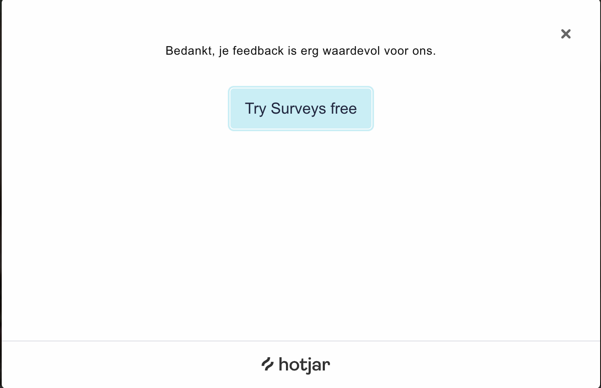
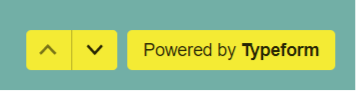
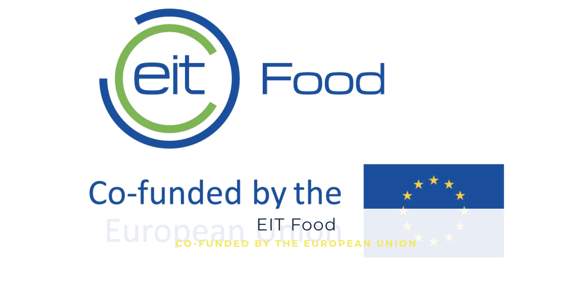

Derde Partij
De derde partijen kunnen het bedrijf helpen om bepaalde functies te maken zoals een sruvey, deze gebruik je bijvoorbeeld ook bij keurmerken.
Hotjar survey:
Hotjar wordt gebruikt om een survey te volgen op de originele website van Vini Mini, in deze survey kan je beantwoorden hoe je terecht bent gekomen op de website.
Typeform Formulier:
Op de orginele website word een Typeform formulier gebruikt om een test aftenemen waarin je naar een bepaald aantal vragen advies krijgt over wat je moet doen.
Eit Food:
Eit Food is een voorbeeld van een keurmerk wat gebruikt word op de website van Vini Mini. Als je dit logo gebruikt moet je er altijd voor zorgen dat de tekst erin duidelijk leesbaar is.
Don'ts:
- Er mag nooit een ander programma dan Hotjar worden gebruikt om een survey te volgen.
- Op de orginele website mag er nooit een ander soort formulier gebruikt worden dan een Typeform formulier om een test aftenemen.
- Het Eit logo mag nooit onduidelijk te lezen zijn, anders mag dit niet worden gebruikt.